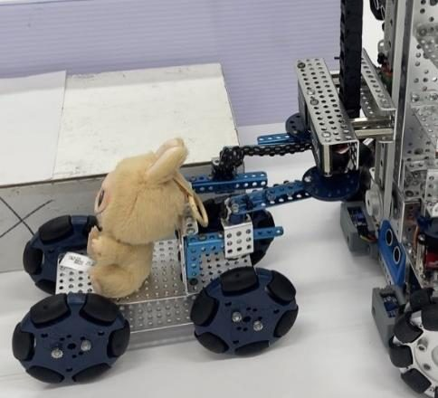
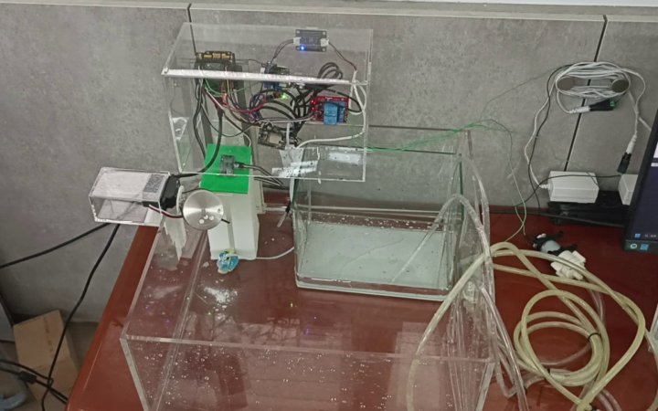
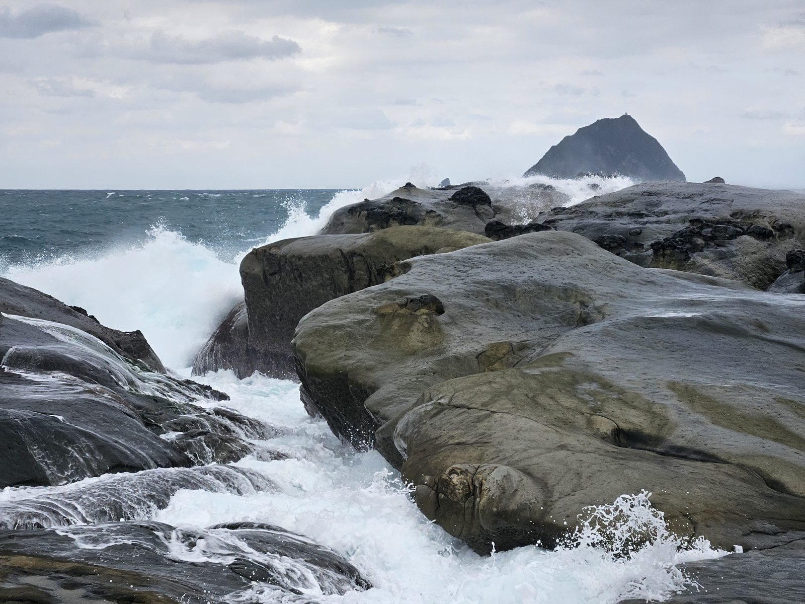
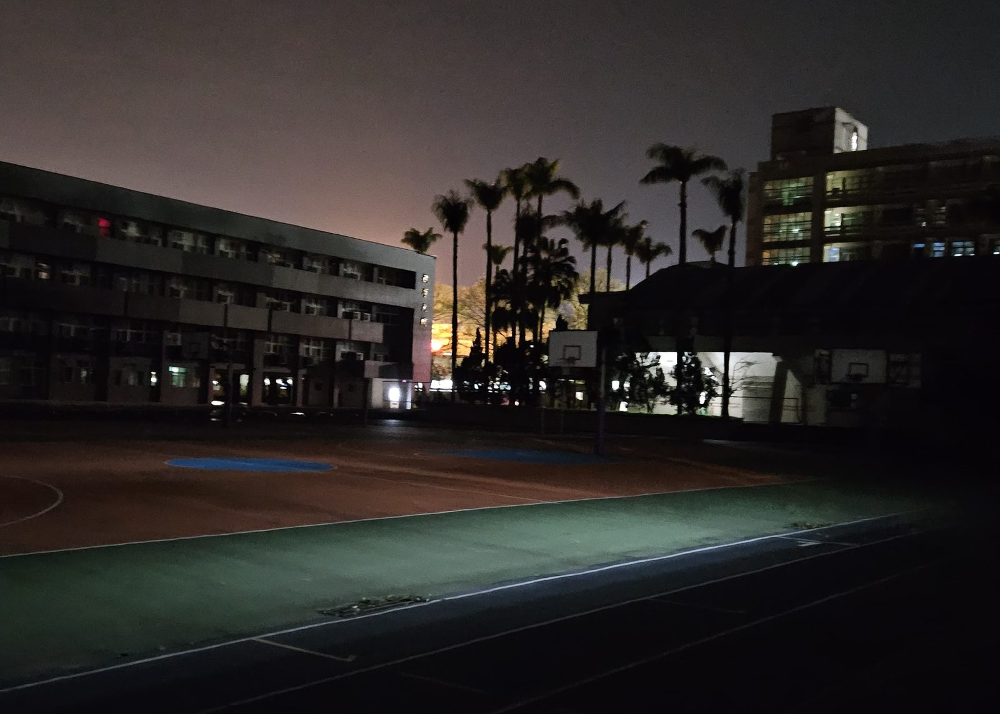

後端與系統開發
以 Python Flask 寫了智慧藥盒的 LINE Bot 後端，負責用藥排程、提醒推播與溫溼度警示；在 5G 專題中參與以 FastAPI 建置的路口邊緣運算服務，處理車輛上報資料與警示回傳。
電子學、微處理機與程式設計課程打底，三年都在做機器人和感測系統專題；擔任航空電子專業研習社、無人載具研究社社長。
全國第一
第三次參賽。2023 年分區賽佳作、2024 年分區賽第二，同年全國賽第一。
銀牌
以「多功能智慧藥盒」參賽，作品另取得中華民國新型專利。
參與 5G 車路協作交通安全系統，負責路口邊緣運算的演算法，作品入圍 2026 行動通訊實務競賽決賽。
以 Python Flask 寫了智慧藥盒的 LINE Bot 後端，負責用藥排程、提醒推播與溫溼度警示；在 5G 專題中參與以 FastAPI 建置的路口邊緣運算服務，處理車輛上報資料與警示回傳。
競賽機器人以攝影機辨識字母、判斷夾取目標；魚菜園與魚塭監測系統分析水質感測資料並判斷異常；5G 專題則依車輛位置與航向預測機車 1–2 秒內的軌跡。
5G 專題比較了把運算放在路口邊緣與遠端雲端的差異：往返延遲約 5 毫秒時警示有效，多 500 毫秒就來不及。智慧藥盒、魚菜園也都透過 Wi-Fi 把裝置狀態即時傳到雲端。
以上整理自做過的作品，大方向偏向軟體；希望在專題中跟著老師挑一個方向做得更深入。
2026 行動通訊實務競賽 智慧數位應用組・入圍決賽（進行中）
大型車右轉時後輪內切，常把並行的機車捲入車底。系統讓大車與機車各自經 5G 每秒 10 次上報位置、航向與方向燈，由路口的邊緣運算節點（MEC）同時掌握雙方狀態，即時判斷衝突，並分別提醒：機車減速、大車暫緩轉彎。
Python・FastAPI・free5GC・UERANSIM・OAI-MEP・SUMO
我的角色五人團隊中負責 MEC 演算法：動態內輪差掃掠區模型、機車 1–2 秒軌跡預測、分級警示與防閃爍邏輯。
5G 往返延遲約 5 毫秒。改放遠端雲端時警示來不及，距離反而比無預警更近，說明運算必須放在路口邊緣。
IEYI 2025 世界青少年發明展 銀牌（日本）・新型專利 M681785
12 格旋轉藥盒，ESP32 控制伺服馬達分格出藥，可用 LINE 指令或 RFID 磁扣開啟，OLED 顯示剩餘格數與溫溼度。後端以 Python Flask 架設 LINE Bot，負責用藥提醒，藥盒內溫度超過 26°C 或濕度超過 60% 時主動推播。
我的角色簡報以外的全部開發：ESP32 韌體、雲端後端與硬體整合。
第 54 屆全國技能競賽 機器人職類・全國第一
以 NI myRIO 為控制核心、LabVIEW 撰寫程式，整合兩組超音波感測器、BNO055 陀螺儀與攝影機，以影像辨識字母判斷要夾取的物件與位置。設計正三角形底盤、升降與夾爪機構，部分零件自行 3D 列印。
參賽歷程2023 分區佳作 → 2024 分區第二 → 全國第一

114 年全國專題實作及創意競賽・電機與電子群
針對護理人力短缺，設計能巡房、送藥收藥、推送輪椅的機器人。myRIO 處理感測器資料與即時控制，實現自主導航與避障；透過 Wi-Fi 讓護理站與家屬端介面遠端下達任務，並統計各房訂餐紀錄。
團隊五人團隊作品。

第 64 屆全國科展北一區 工程科學（一）・優等
以 LinkIt 7697 與 Arduino 量測魚塭的 pH、水溫、濁度與 TDS，經 Wi-Fi 上傳雲端，數值異常時以 LINE 通知漁民。3D 列印環狀魚菜共生模型並加入自動灑水。
解決的問題pH 感測器標示電壓與實際需求不符，改以電阻分壓解決。
Python（Flask、FastAPI）
C/C++（Arduino、ESP32）
LabVIEW、LINE Bot
free5GC、UERANSIM、OAI-MEP
SUMO 交通模擬
微處理機與單晶片、感測器整合
電路設計、可程式化邏輯
3D 建模與列印
電腦硬體裝修 乙級
工業電子 乙級
電腦軟體應用、網路架設 丙級

